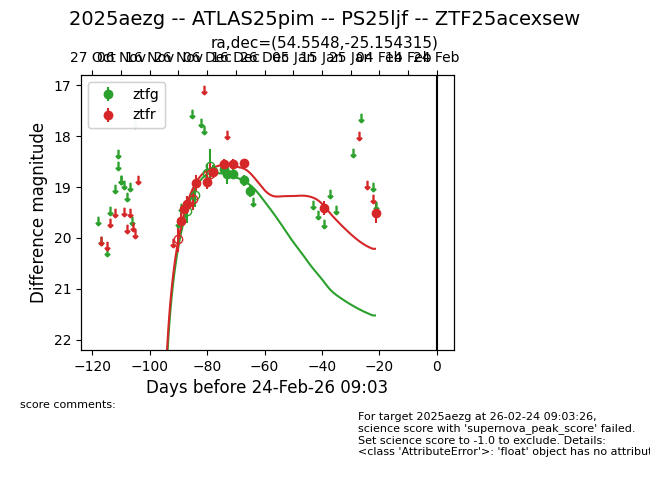
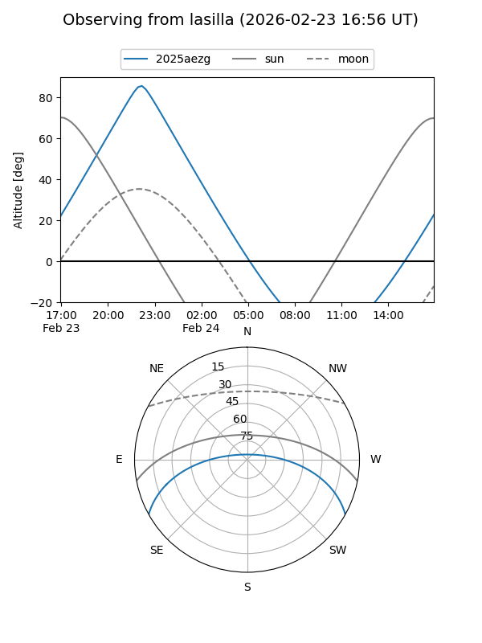
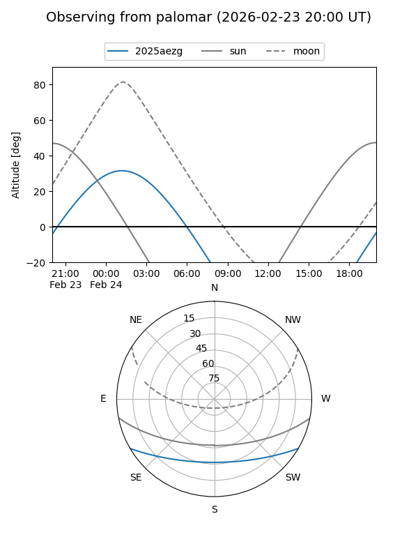
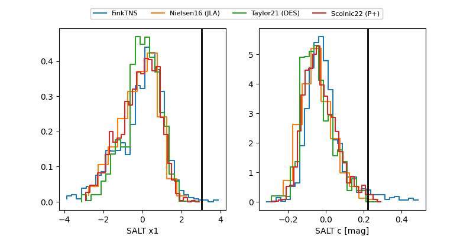

2025aezg
Target 2025aezg at 2025-12-19 08:44
Aliases and brokers:
FINK: fink-portal.org/ZTF25acexsew
Lasair: lasair-ztf.lsst.ac.uk/objects/ZTF25acexsew
ALeRCE: alerce.online/object/ZTF25acexsew
TNS: wis-tns.org/object/2025aezg
YSE: ziggy.ucolick.org/yse/transient_detail/2025aezg
alt names
ZTF25acexsew (ztf,fink_ztf)
2025aezg (tns,yse)
ATLAS25pim (atlas)
Coordinates:
equatorial (ra, dec) = 54.5547,-25.15429
equatorial (HMS+DMS) = 03:38:13.13,-25:09:15.45
galactic (l, b) = (219.5733,-52.68796)
Flags:
Photometry:
last atlasc=18.68, atlaso=18.31, ztfg=18.87, ztfr=18.53
3 atlasc, 6 atlaso, 5 ztfg, 9 ztfr detections
Lightcurve

Visibility


Additional plots
